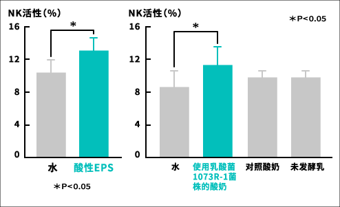
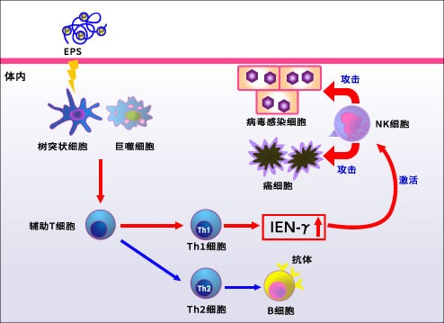

|
乳酸菌1073R-1株 实验结果(2)确认服用了乳酸菌1073R-1株的小鼠其NK活性得到增强。乳酸菌1073R-1株所产生的多糖体（EPS）可分为中性和酸性两种。如果让它们分别作用于小鼠的脾脏细胞（聚集各种免疫细胞的细胞集团）的话，就会对酸性EPS发挥作用使其制作免疫系统传递物质IFN-γ（※2）。然后把这种酸性EPS授予小鼠之后，其NK活性增强。接着，给小鼠喂食由乳酸菌1073R-1株制成的酸奶。其结果，和仅授予酸性EPS时一样，NK活性得到增强。 ※2IFN-γ（干扰素-伽玛）是细胞因子的一种，由T细胞产生，可激活巨噬细胞和NK细胞，提高免疫力。 通过小鼠确认NK活性的上升效果由乳酸菌1073R-1株制成的酸奶能提高NK活性  NK活性的机制酸性EPS具有IFN-γ产生诱导能力。另外，IFN-γ能激活NK细胞。  |